Catálogo completo de libros
Catálogo completo de los 137 libros de trading de Luis Risueño Gómez, en español, inglés, francés, alemán e italiano.
INSTITUTIONELLER HANDEL MIT FOREX UND AKTIEN: Wie die starken Hände von 1 Minute bis 1 Tag handeln
PREISAKTION 3.0: KLARE STRATEGIEN FÜR MODERNE HÄNDLER
Professionelles Scalping 3.0: Präzision und Disziplin: Machen Sie den Handel zu Ihrer Freiheit
SMART MONEY TRADING: Institutionelle Forex-Strategien
 Smart Money Concept, 4.0 Pro: Trading Forex istituzionale con blocchi di ordini e azione del prezzo
TRADING ISTITUZIONALE SU FOREX E AZIONI: Come operano i grandi investitori in 1m - 1D
WYCKOFF TRADING ISTITUZIONALE: Liquidità, manipolazione e psicologia dei mercati
95 % DER HÄNDLER VERLIEREN GELD: DIE UNBEQUEME WAHRHEIT ÜBER DEN HANDEL
Bollinger Bands 2.0: Volatilität bei Aktien, Kryptowährungen und Devisen meistern: Risikomanagement
Bollinger-Bänder: Erfolgsstrategien: Dynamische Analyse
DIE TASCHE FÜR ANFÄNGER 2.0: Praktischer Leitfaden zum Verständnis und zur Investition in globale Märkte
Smart Money Concept, 4.0 Pro: Trading Forex istituzionale con blocchi di ordini e azione del prezzo
TRADING ISTITUZIONALE SU FOREX E AZIONI: Come operano i grandi investitori in 1m - 1D
WYCKOFF TRADING ISTITUZIONALE: Liquidità, manipolazione e psicologia dei mercati
95 % DER HÄNDLER VERLIEREN GELD: DIE UNBEQUEME WAHRHEIT ÜBER DEN HANDEL
Bollinger Bands 2.0: Volatilität bei Aktien, Kryptowährungen und Devisen meistern: Risikomanagement
Bollinger-Bänder: Erfolgsstrategien: Dynamische Analyse
DIE TASCHE FÜR ANFÄNGER 2.0: Praktischer Leitfaden zum Verständnis und zur Investition in globale Märkte
 GESTION DES RISQUES DANS LE TRADING MODERNE 2.0: Stratégies avancées
IA, DeFi et psychologie dans la nouvelle ère du trading: Le trader moderne 2.0
INDICATEURS TECHNIQUES, STATISTIQUES: TRADING, FOREX
Introduction au trading: Analyse technique et exercices pratiques
GESTION DES RISQUES DANS LE TRADING MODERNE 2.0: Stratégies avancées
IA, DeFi et psychologie dans la nouvelle ère du trading: Le trader moderne 2.0
INDICATEURS TECHNIQUES, STATISTIQUES: TRADING, FOREX
Introduction au trading: Analyse technique et exercices pratiques
 NON CHIUDIAMO MAI IN ORARIO: La psicologia dell'attaccamento a decisioni che non funzionano più
SMALL CAPS: Guida pratica al trading delle small cap americane
Scalping nel Forex: Strategie di trading a 5 minuti
TRADING VS POKER: Vantaggio statistico e processo decisionale in condizioni di incertezza
Trading per principianti: Analisi tecnica
NON CHIUDIAMO MAI IN ORARIO: La psicologia dell'attaccamento a decisioni che non funzionano più
SMALL CAPS: Guida pratica al trading delle small cap americane
Scalping nel Forex: Strategie di trading a 5 minuti
TRADING VS POKER: Vantaggio statistico e processo decisionale in condizioni di incertezza
Trading per principianti: Analisi tecnica
Ver el catálogo interactivo →
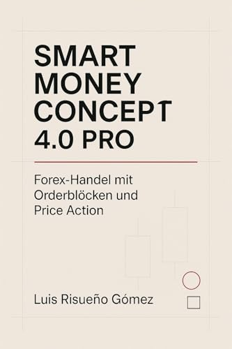
Smart Money Concept 4.0 PRO: Forex-Handel mit Orderblöcken und Price Action WIE MAN ICT OHNE INDIKATOREN HANDELT: Vom leeren Chart zur professionellen Marktausführung WYCKOFF & SMART MONEY: Wie Institutionen den Markt wirklich bewegen INSTITUTIONAL TRADING IN FOREX AND STOCKS: How the Big Players Operate in 1m - 1D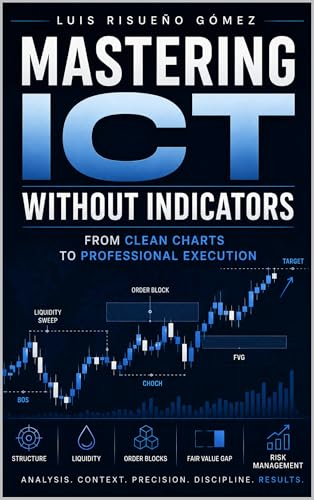
MASTERING ICT WITHOUT INDICATORS: From Clean Charts to Professional Execution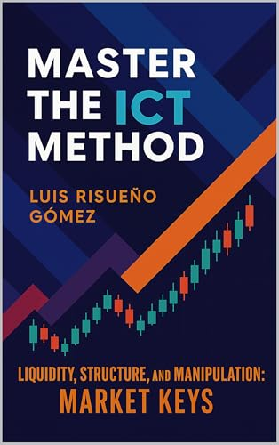
Master the ICT Method: Liquidity, Structure, and Manipulation: Market Keys PRICE ACTION 3.0: CLEAR STRATEGIES FOR MODERN TRADERS Professional Scalping 3.0: Precision and Discipline: Turn trading into your freedom SMART MONEY CONCEPTS: Institutional Trading Strategy Smart Money Concept, 4.0 Pro: Institutional Forex Trading with Order Blocks & Price Action WYCKOFF & INSTITUTIONAL TRADING: Liquidity, Market Manipulation, and Trading Psychology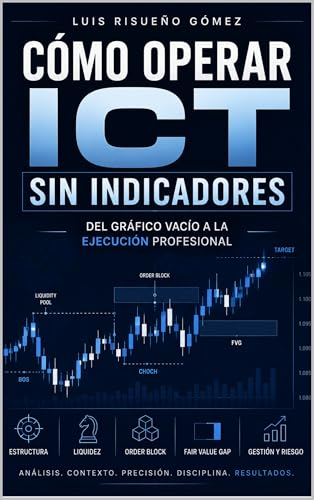
CÓMO OPERAR ICT SIN INDICADORES: Del gráfico vacío a la ejecución profesional Domina el Método ICT: Liquidez, Estructura y Manipulación: Claves del Mercado LA ACCIÓN DEL PRECIO 3.0: ESTRATEGIAS CLARAS PARA TRADERS MODERNOS SMART MONEY CONCEPT: ESTRATEGIA INSTITUCIONAL PASO A PASO: Aprende a detectar liquidez, trampas del mercado y ejecutar entradas con Order Blocks, BOS y CHOCH en Forex Scalping Profesional 3.0: Precisión y disciplina: Convierte el trading en tu libertad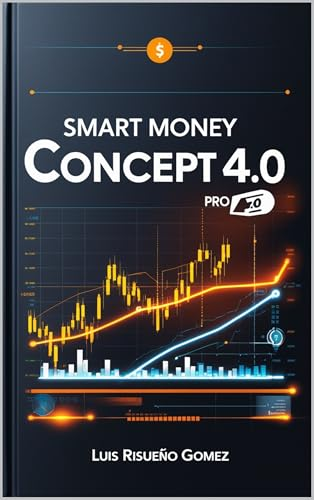
Smart Money Concept, 4.0 Pro: Operaciones institucionales en el mercado de divisas con bloques de órdenes y acción del precio TRADING INSTITUCIONAL EN FOREX Y ACCIONES: Cómo Operan las Manos Fuertes en 1m - 1D WYCKOFF TRADING INSTITUCIONAL: Liquidez, manipulación y psicología del mercado COMMENT TRADER ICT SANS INDICATEURS: Du graphique épuré à l'exécution professionnelle Maîtrisez la méthode ICT: Liquidité, structure et manipulation: les clés du marché PRICE ACTION 3.0: DES STRATÉGIES CLAIRES POUR LES TRADERS MODERNES SMART MONEY CONCEPTS: La stratégie institutionnelle en Forex Scalping Professionnel 3.0: Précision et discipline: Faites du trading votre liberté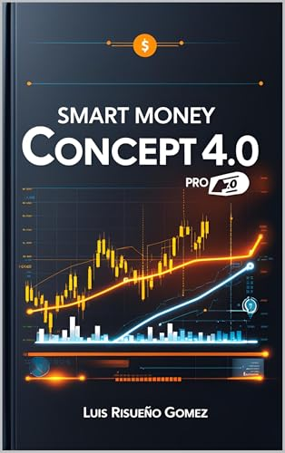
Smart Money Concept, 4.0 Pro: Trading Forex institutionnel avec blocs d'ordres et action sur les prix TRADING INSTITUTIONNEL SUR LE FOREX ET LES ACTIONS: Comment opèrent les mains fortes en 1 min - 1 j WYCKOFF & TRADING INSTITUTIONNEL: Liquidité, manipulation institutionnelle et psychologie du marché COME FARE TRADING CON ICT SENZA INDICATORI: Dal grafico pulito all'esecuzione professionale PRICE ACTION 3.0: STRATEGIE CHIARE PER I TRADER MODERNI Padroneggia il metodo ICT: Liquidità, struttura e manipolazione: le chiavi del mercato SMART MONEY NEL FOREX: Order Block, BOS e CHOCH per leggere liquidità e trappole di mercato Scalping professionale 3.0: precisione e disciplina: Trasforma il trading nella tua libertà
Smart Money Concept, 4.0 Pro: Trading Forex istituzionale con blocchi di ordini e azione del prezzo
TRADING ISTITUZIONALE SU FOREX E AZIONI: Come operano i grandi investitori in 1m - 1D
WYCKOFF TRADING ISTITUZIONALE: Liquidità, manipolazione e psicologia dei mercati
95 % DER HÄNDLER VERLIEREN GELD: DIE UNBEQUEME WAHRHEIT ÜBER DEN HANDEL
Bollinger Bands 2.0: Volatilität bei Aktien, Kryptowährungen und Devisen meistern: Risikomanagement
Bollinger-Bänder: Erfolgsstrategien: Dynamische Analyse
DIE TASCHE FÜR ANFÄNGER 2.0: Praktischer Leitfaden zum Verständnis und zur Investition in globale Märkte
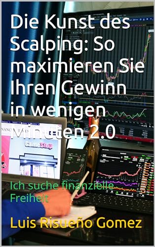
Die Kunst des Scalping: So maximieren Sie Ihren Gewinn in wenigen Minuten 2.0: Ich suche finanzielle Freiheit Die Struktur und Harmonie des Preises 2.0: Trading mit Liquidität Die Struktur und Harmonie des Preises: Handelsstrategien Einführung in den Handel: Technische Analyse und praktische Übungen Forex-Scalping: Strategien für das Trading im 5-Minuten-Chart HANDEL: DEN MARKT LESEN: Eine Intraday-Studie zum Preisverhalten HANDELN VS. POKER: Statistischer Vorteil und Entscheidungsfindung unter Unsicherheit Japanische Kerzenmuster: Erfolgstaktiken: Stille Sprache KI, DeFi und Psychologie im neuen Zeitalter des Handels: Der moderne Trader 2.0 Praktische Handelsübungen: Echtzeitanalyse 1.0: Strategien und Muster SMALL CAPS: Ein praxisorientierter Leitfaden für den Handel mit US-amerikanischen Small-Cap-Aktien SMART MONEY VS. CHARTMUSTER: Liquidität, Manipulation und Strategie TECHNISCHE INDIKATOREN, STATISTIKEN: TRADING, FOREX Verwandeln Sie Ihr Trading mit Chart-Mustern: Handelsgeheimnisse WAS IHNEN NIEMAND ÜBER DEN HANDEL ERZÄHLT: Praktische Erkenntnisse aus Tausenden von Stunden vor den Charts WIR SCHLIESSEN NIE PÜNKTLICH: Die Psychologie des Festhaltens an Entscheidungen, die nicht mehr funktionieren Wyckoff 4.0: Moderne Strategien und Marktanalyse 95% OF TRADERS LOSE MONEY: THE INCONVENIENT TRUTH ABOUT TRADING Bollinger Bands 2.0: Mastering Volatility Across Stocks, Crypto & Forex: Risk management FOREX SCALPING: Profitable 5-Minute Trading Strategies Introduction to Trading: Technical analysis and practical exercises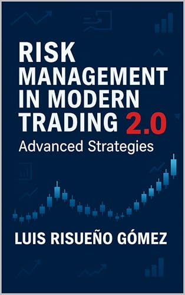
RISK MANAGEMENT IN MODERN TRADING 2.0: Advanced Strategies SMALL CAPS: A Practical Guide to Trading U.S. Small-Cap Stocks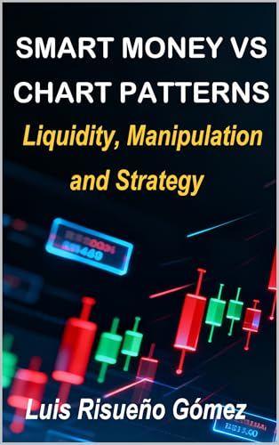
SMART MONEY VS CHART PATTERNS: Liquidity, Manipulation and Strategy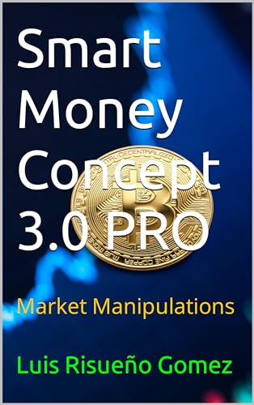
Smart Money Concept 3.0 PRO: Market Manipulations TECHNICAL INDICATORS, STATISTICS: FOREX, FOREX TRADING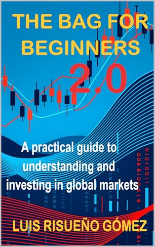
THE BAG FOR BEGINNERS 2.0: A practical guide to understanding and investing in global markets TRADING VS POKER: Statistical advantage and decision-making under uncertainty TRADING: READ THE MARKET: An intraday study of price behavior The Structure and Harmony of Price 2.0: Trading with Liquidity The Structure and Harmony of Price: Trading Strategies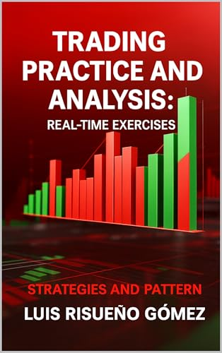
Trading Practice and Analysis: Real-Time Exercises: Strategies and Patterns Trading for Newbies: Technical Analysis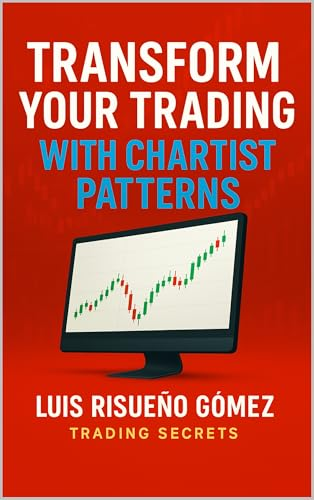
Transform your Trading with Chartist Patterns: Trading Secrets WE NEVER CLOSE ON TIME: The psychology of sticking to decisions that no longer work WHAT NO ONE TELLS YOU ABOUT TRADING: Real lessons learned from thousands of hours in the markets EL 95 % DE LOS TRADERS PIERDE DINERO: LA VERDAD INCÓMODA DEL TRADING Ejercicios Prácticos de Trading: Análisis en Tiempo Real 1.0: Estrategias y Patrones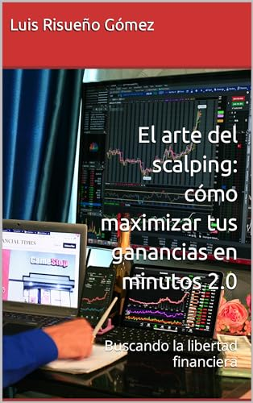
El arte del scalping: cómo maximizar tus ganancias en minutos 2.0: Buscando la libertad financiera GESTIÓN DEL RIESGO EN EL TRADING MODERNO 2.0: Estrategias Avanzadas IA, DeFi y Psicología en la nueva era del trading: El Trader Moderno 2.0 INDICADORES TECNICOS, ESTADISTICA: TRADING, FOREX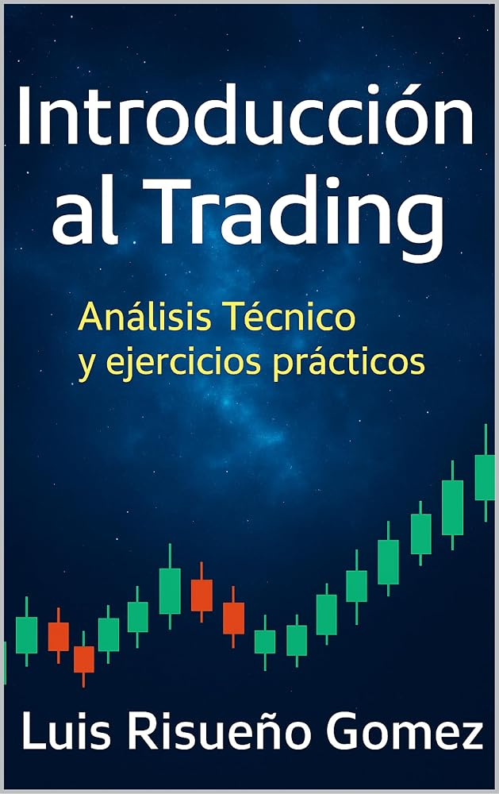
Introducción al Trading: Análisis Técnico y ejercicios prácticos LO QUE NADIE TE CUENTA SOBRE EL TRADING: Aprendizajes reales tras miles de horas delante de los gráficos La Estructura y Armonía del Precio 2.0: Trading con Liquidez La Estructura y Armonía del Precio: Estrategias de Trading Las Bandas de Bollinger: Estrategias de Éxito: Análisis Dinámico NUNCA CERRAMOS A TIEMPO: La psicología de mantener decisiones que ya no funcionan Patrones de Velas Japonesas: Tácticas de Éxito: Lenguaje Silencioso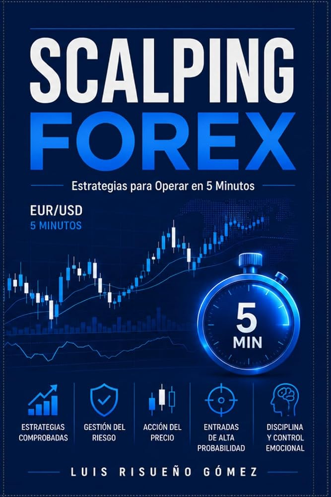
SCALPING FOREX: Estrategias para Operar en 5 Minutos SMALL CAPS: Guía práctica para operar acciones de baja capitalización en Estados Unidos SMART MONEY VS PATRONES CHARTISTAS: Liquidez, Manipulación y Estrategia Smart Money Concept 3.0 PRO: Market Manipulations TRADING VS POKER: Ventaja estadística y toma de decisiones bajo incertidumbre TRADING: LEER EL MERCADO: Un estudio intradía del comportamiento del precio Trading para Novatos: Análisis Técnico Transforma tu Trading con Patrones Chartistas: Secretos del Trading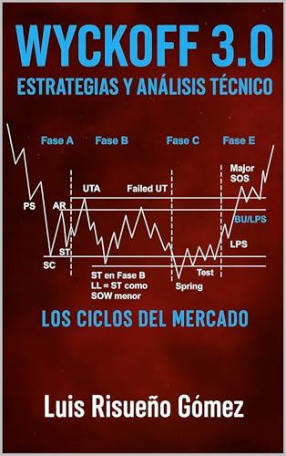
Wyckoff 3.0: Estrategias y Análisis Técnico: Los Ciclos del Mercado 95 % DES TRADERS PERDENT DE L'ARGENT: LA VÉRITÉ DÉRANGEANTE SUR LE TRADING ARGENT INTELLIGENT VS MODÈLES GRAPHIQUES: Liquidité, manipulation et stratégie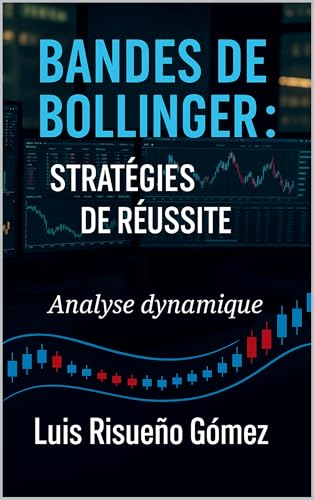
Bandes de Bollinger: Stratégies de réussite: Analyse dynamique COMMERCE: LIRE LE MARCHÉ: Une étude intraday du comportement des prix Ce que personne ne vous dit sur le trading: Les vraies leçons tirées de milliers d'heures passées devant les graphiques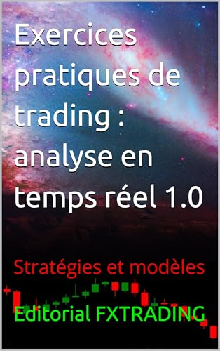
Exercices pratiques de trading: analyse en temps réel 1.0: Stratégies et modèles
GESTION DES RISQUES DANS LE TRADING MODERNE 2.0: Stratégies avancées
IA, DeFi et psychologie dans la nouvelle ère du trading: Le trader moderne 2.0
INDICATEURS TECHNIQUES, STATISTIQUES: TRADING, FOREX
Introduction au trading: Analyse technique et exercices pratiques
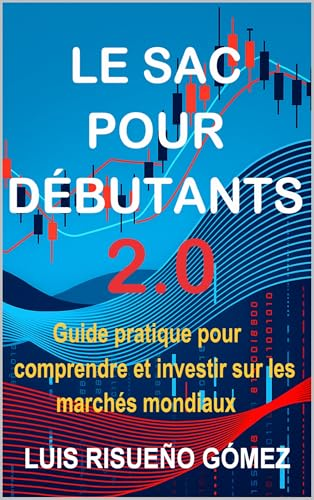
LE SAC POUR DÉBUTANTS 2.0: Guide pratique pour comprendre et investir sur les marchés mondiaux La structure et l'harmonie du prix 2.0: Trading avec liquidité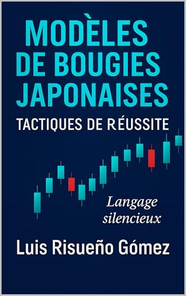
Modèles de bougies japonaises: tactiques de réussite: Langage silencieux NOUS NE FERMONS JAMAIS À L'HEURE: La psychologie du maintien de décisions qui ne fonctionnent plus SCALPING FOREX: Stratégies de trading sur 5 minutes SMALL CAPS: Guide pratique du trading des actions américaines à petite capitalisation TRADING VS POKER: Avantage statistique et prise de décision en situation d'incertitude Transformez votre trading avec des modèles chartistes: Secrets commerciaux Bande di Bollinger: Strategie di successo: Analisi dinamica COMMERCIO: LEGGI IL MERCATO: Uno studio intraday del comportamento dei prezzi COSE CHE NESSUNO TI DICE SUL TRADING: Vere lezioni apprese dopo migliaia di ore passate davanti ai grafici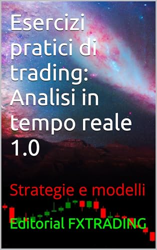
Esercizi pratici di trading: analisi in tempo reale 1.0: Strategie e modelli GESTIONE DEL RISCHIO NEL TRADING MODERNO 2.0: Strategie avanzate IA, DeFi e psicologia nella nuova era del trading: Il trader moderno 2.0 IL 95% DEI TRADER PERDE SOLDI: LA SCOMODA VERITÀ SUL TRADING INDICATORI TECNICI, STATISTICHE: TRADING, FOREX Introduzione al trading: Analisi tecnica ed esercitazioni pratiche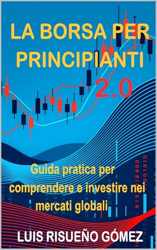
LA BORSA PER PRINCIPIANTI 2.0: Guida pratica per comprendere e investire nei mercati globali La struttura e l'armonia del prezzo 2.0: Trading con liquidità La struttura e l'armonia del prezzo: Strategie di trading Modelli di candele giapponesi: tattiche di successo: Linguaggio silenzioso
NON CHIUDIAMO MAI IN ORARIO: La psicologia dell'attaccamento a decisioni che non funzionano più
SMALL CAPS: Guida pratica al trading delle small cap americane
Scalping nel Forex: Strategie di trading a 5 minuti
TRADING VS POKER: Vantaggio statistico e processo decisionale in condizioni di incertezza
Trading per principianti: Analisi tecnica